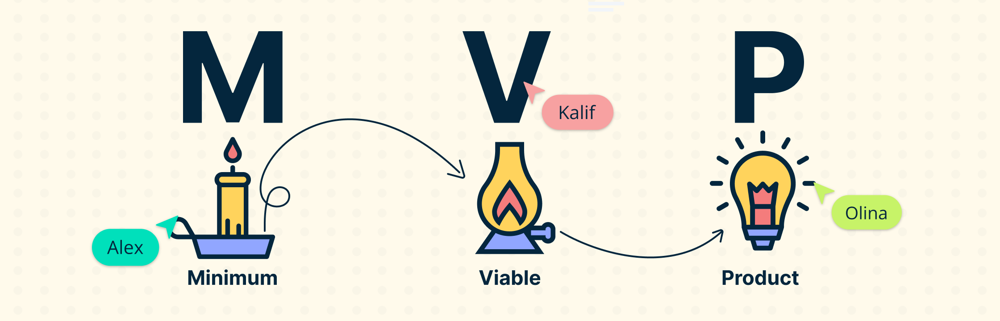

Ma olen Noorem Tarkvaraarendaja
Tere! Minu nimi on Iryna. Ma õpin ja töötan tarkvaraarenduse valdkonnas. Mulle meeldib lahendada keerulisi probleeme ja õppida uusi tehnoloogiaid.
Minu Oskused
Õpitud ained on: Õpitud ained on:- Projecti loomine
- Kontoritöö tarkvara
- Arvuti- ja taristu osad
- Multimeedia
Minu Projektid
WP PortfoolioMVP (Minimum Viable Product)
MVP (Minimum Viable Product) tähendab minimaalset elujõulist toodet, millel on ainult põhifunktsioonid. See luuakse hüpoteeside testimiseks ja nõudluse analüüsimiseks.

MVP põhimõtte rakendamine IT-projektides võimaldab:
- Kiirelt toodet turule tuua.
- Testida võtmefunktsioonide vajadust.
- Koguda andmeid kasutajakäitumise kohta.
- Optimeerida arenduskulusid.
- Parandada toodet järk-järgult tagasiside põhjal.